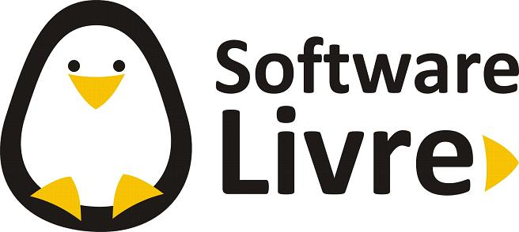

O que é um software?

Software é o conjunto de instruções que permite que dispositivos eletrônicos, como celulares e computadores, realizem tarefas. Ele faz a ponte entre o usuário e o hardware, garantindo que tudo funcione como esperado. Existem softwares que atuam nos bastidores, como os sistemas operacionais, e outros usados diretamente pelas pessoas, como aplicativos, jogos, navegadores e editores de texto. Esses programas são geralmente classificados em três tipos: software de sistema, de aplicação e de programação. Cada um tem um papel específico na estrutura e no funcionamento dos sistemas computacionais.
O que é um sistema operacional?

Um sistema operacional (SO) é um conjunto de softwares que gerencia o hardware e as aplicações de um computador, alocando recursos como memória, CPU, dispositivos de input e produção e armazenamento de arquivos. O usuário interage com o sistema operacional por meio de uma interface de usuário (UI), que envia comandos em uma linguagem compreendida pelo SO. A UI pode ser uma interface gráfica de usuário (GUI) ou uma interface de linha de comando (CLI). Bilhões de pessoas dependem dos sistemas operacionais como base para realizar tarefas como enviar e-mails, navegar na internet, jogar videogame e muito mais. Todos os sistemas computacionais, desde mainframes até desktops e dispositivos móveis, precisam de pelo menos um sistema operacional para executar tarefas, rodar aplicações e interagir com o hardware. Segundo um relatório da Statista, o Microsoft Windows
O que é uma licença de software?

Licença de software é o documento que define os limites de uso que um usuário pode ter em relação a um produto de terceiros. A origem do termo remonta ao uso de imagem e de som, como compreendido pelo Direito, e pode restringir a cópia, a distribuição e a adaptação da aplicação. Existem várias categorias de licenças de software, desde as menos restritivas (software livre, software de código aberto, copyleft etc.) até as proprietárias. Conheça melhor as diferenças entre elas e os principais benefícios de utilizar um software licenciado em sua companhia!
O que é um Software Licenciado?

Uma licença de software, ou licença de programa de computador, é uma definição de ações autorizadas (ou proibidas), no âmbito do direito de um programador de software de computador concedidas (ou impostas) ao usuário deste software. Entende-se por usuário qualquer entidade legal, empresas ou um "usuário final (doméstico)", de onde tem origem o termo em inglês end user license agreement (EULA). Quando uma licença acrescenta restrições para além das existentes no direito de autor, o usuário tem normalmente de aceitar que lhe sejam impostas estas restrições para poder utilizar legalmente o software, sendo esta uma das diferenças entre uma licença de software livre e uma licença de software não-livre: as licenças de software livre acrescentam direitos face aos já concedidos pelo direito de autor, deixando apenas para o ato de redistribuição as únicas regras que impõem.
O que é um Software livre?
Software livre é o software que concede liberdade ao usuário para executar, acessar e modificar o código fonte, e redistribuir cópias com ou sem modificações. Sua definição é estabelecida pela Free Software Foundation em conjunto com o projeto GNU. Segundo a definição, criada por Richard Stallman, fundador da FSF, software livre é qualquer programa de computador que pode ser usado, copiado, estudado, modificado e redistribuído sem nenhuma restrição. É permitido vender software livre, entretanto as mesmas liberdades são válidas para o comprador.
O que é um Software Proprietário?

O software proprietário, privativo ou não livre, é um software para computadores que é licenciado com direitos exclusivos para o produtor. Conforme o local de distribuição do software, este pode ser abrangido por patentes, direitos de autor, assim como limitações para a sua exportação e uso em países terceiros. Seu uso, redistribuição ou modificação é proibido ou limitado, exigindo que você solicite permissão para tal ou restringindo de tal forma que não é possível fazê-lo livremente. A expressão foi criada em oposição ao conceito de software livre.
O que é um software de Sistema?

Software de sistema ou programa de sistema é o software projetado para fornecer uma plataforma para outro software. Exemplos de software de sistema incluem sistemas operacionais como macOS, Ubuntu (uma distribuição Linux) e Microsoft Windows, software de computação científica, mecanismos de jogos, automação industrial e aplicativos de software como serviço. Em contraste com o software de sistema, softwares que permitem aos usuários realizar tarefas orientadas ao usuário, como criar documentos de texto, jogar jogos de computador, ouvir música ou navegar na Web, são coletivamente chamados de software aplicativo.
O que é um software Aplicativo?

Na informática, o software aplicativo, aplicativo, ou aplicação (abreviado app), é um programa computacional projetado com uma linguagem de programação para facilitar o dia-a-dia do usuário de forma intuitiva realizando uma tarefa específica; executar um grupo de funções, tarefas, ou atividades coordenadas para o benefício do usuário (como processador de texto, planilha eletrônica, aplicativo de contabilidade, navegador web, cliente de e-mail, reprodutor de mídia, gerenciador de arquivos, simulador de voo aeronáutico, consola de jogos, ou editor de fotos). O substantivo coletivo software aplicativo refere-se a todas as aplicações coletivamente. Isso contrasta com o software de sistema, que está principalmente envolvido na execução do computador.
O que é um software de Programação?

Os softwares de programação (ou ferramentas de programação, como também são conhecidos) são essenciais para qualquer desenvolvedor, pois permitem escrever, editar, testar e depurar códigos-fonte de diferentes linguagens de programação. Esses programas ajudam a transformar ideias em soluções reais, tornando o processo de criação de software mais eficiente e organizado. Dentro desse universo, existem diferentes tipos de ferramentas, cada uma com um papel específico.
O que é um software de diagnóstico de software?

Diagnóstico de software (também conhecido como diagnóstico de software ) refere-se a conceitos, técnicas e ferramentas que permitem obter descobertas, conclusões e avaliações sobre sistemas de software e sua implementação, composição, comportamento e evolução. Serve como meio para monitorar, orientar, observar e otimizar o desenvolvimento, a manutenção e a reengenharia de software, no sentido de uma abordagem de inteligência de negócios específica para sistemas de software. Geralmente, baseia-se na extração, análise e visualização automáticas das fontes de informação correspondentes do sistema de software. Também pode ser feito manualmente, sem ser automático.
O que é um software de diagnóstico de hardware?

Um programa de diagnóstico de hardware é uma ferramenta essencial para identificar e solucionar problemas relacionados ao hardware de um computador. Esses programas são projetados para testar e analisar os componentes físicos de um sistema, como processador, memória, disco rígido, placa-mãe, placa de vídeo, entre outros.